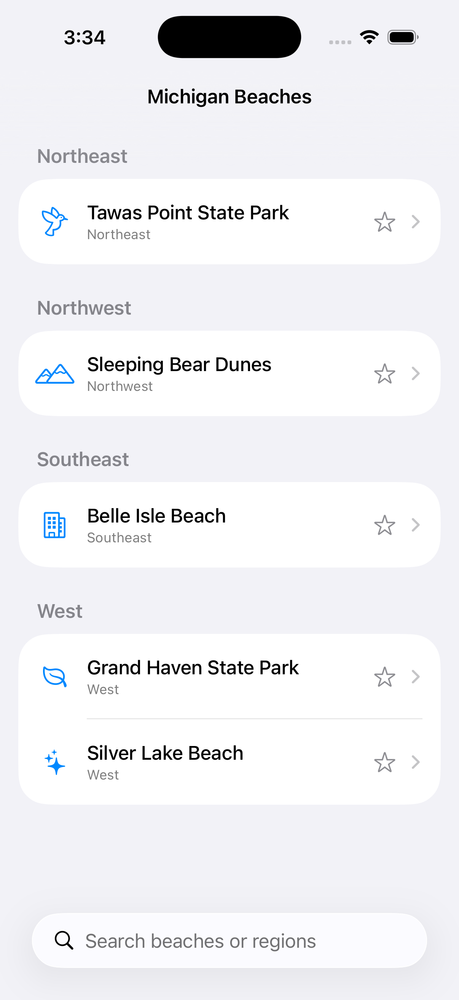
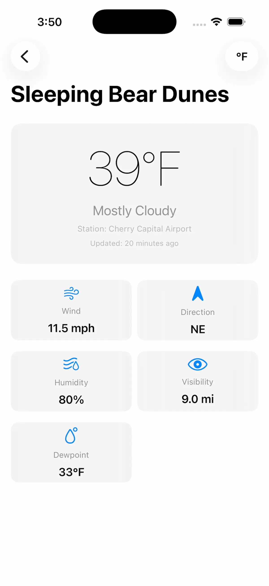

CoastCast
SwiftUI iOS app with a Python backend API for real-time Michigan water and weather data.
Demo Video
Problem
This project was created to learn and demonstrate a skill we had never tried before: building a full-stack app with a custom Python backend and a modern SwiftUI frontend. The goal was to integrate real-time environmental data, design a responsive mobile interface, and implement async data fetching and robust error handling. By tackling both backend API development and frontend architecture, we expanded our technical abilities and delivered a practical solution for Michigan lake and weather information.
Challenge-Based Learning
Challenge: Integrate real-time water and weather data from multiple sources into a seamless mobile experience.
Approach: Built a custom Python API to aggregate and serve data, then designed a SwiftUI app to consume and present it with robust error handling and accessibility.
Outcome: Delivered a reliable, user-friendly app that provides up-to-date Michigan lake conditions, demonstrating full-stack problem solving and technical growth.
Project Snapshot
- Platform: iOS (SwiftUI) app with Python (FastAPI) backend
- Type: Real-time water & weather data app for Michigan lakes
- Focus: Real-time environmental data, async API integration, mobile-first, accessibility, robust error handling
- Team: 2 (collaborative project)
- Role: SwiftUI/iOS developer, Python API developer, product designer
- Timeline: March 2026
Role
Co-engineer responsible for both frontend and backend architecture, data integration, and user experience.
My Contributions
- Designed and implemented the SwiftUI frontend and app navigation
- Developed the Python backend API with FastAPI and Pydantic models
- Integrated real-time data from NDBC and NWS sources
- Built async data fetching and robust error handling
- Tested and validated API endpoints using Thunder Client for rapid iteration and debugging
- Created case study documentation and portfolio presentation
Constraints
Deliver a robust, real-time app with a modern UI and reliable backend, while ensuring accessibility and mobile-first design. Overcome challenges of integrating multiple data sources and maintaining performance for live updates.
Key Decisions
- Chose SwiftUI for rapid, modern iOS development and FastAPI for scalable backend
- Used async/await for smooth data fetching and UI updates
- Integrated NDBC and NWS for comprehensive environmental data
- Designed modular code for easy maintenance and future expansion
Accessibility Decisions
- Implemented dark mode and high-contrast UI support in SwiftUI
- Ensured large tap targets and readable fonts for mobile users
- Provided clear error messages and robust fallback states
Key Screens


Project Overview
CoastCast is an iOS app built with SwiftUI that connects to a custom Python backend API. The app provides real-time water and weather data for Michigan lakes, leveraging both NDBC and NWS services. The SwiftUI frontend offers a clean, accessible interface for users to view forecasts, lake conditions, and historical data. The Python backend handles API calls, data aggregation, and serves results to the app via REST endpoints.
Key Features
- Live weather and water data for Michigan lakes
- SwiftUI interface with accessibility and dark mode support
- Python backend API for data aggregation and processing
- Integration with NDBC and NWS services
- Historical data and forecast views
- Mobile-first design for iPhone and iPad
Technical Highlights
- SwiftUI frontend communicates with Python backend via REST API calls
- Data Flow: User action in SwiftUI → async API call → Python backend processes and returns JSON → SwiftUI ViewModel updates UI.
- Resilience: Robust error handling ensures users see clear messages if data is unavailable or network issues occur.
- Performance: Async design on both ends enables fast, responsive updates without blocking the UI.
- Python backend uses FastAPI, with services for NDBC and NWS data
- Modular code structure for easy maintenance and expansion
- Secure API endpoints and error handling
Frontend: SwiftUI App Architecture
The CoastCast frontend is built with SwiftUI, leveraging modern iOS design patterns and async API calls. The app features a clean interface, real-time data updates, and robust error handling. Below is a key snippet from the BeachViewModel, which powers the main beach detail screens:
@MainActor
class BeachViewModel: ObservableObject {
@Published var beachName: String = ""
@Published var condition: String = ""
private let service = MichiganWaterAPIService()
func loadBeach(id: Int) async {
do {
let response = try await service.fetchBeachDetails(beachID: id)
beachName = response.beach
condition = response.weather.features.first?.properties.textDescription ?? "--"
} catch {
condition = "Couldn't load beach data"
}
}
}
This ViewModel demonstrates async API integration, data conversion, and live UI updates. The app architecture ensures smooth user experience, accurate data display, and responsive error handling.
Frontend & Backend Integration
CoastCast achieves seamless integration between its SwiftUI frontend and Python backend. The app uses async API calls to fetch real-time water and weather data from the MichiganWaterAPI, which aggregates information from NDBC and NWS sources. When a user selects a beach, the frontend triggers an async request to the backend, which responds with structured JSON containing weather, buoy, and alert details. The BeachViewModel parses this data, converts units, and updates the UI instantly.
This architecture allows CoastCast to deliver accurate, up-to-date information to users, combining the strengths of modern iOS development and scalable Python APIs.
Code Highlights
@app.get("/beaches/{beach_id}/ndbc", response_model=WaterConditions)
async def get_ndbc_conditions(beach_id: int):
return await fetch_ndbc_conditions(beach_id)
class WaterConditions(BaseModel):
beach_id: int
temperature: float
wave_height: float
wind_speed: float
async def fetch_ndbc_conditions(beach_id: int) -> WaterConditions:
url = f"https://www.ndbc.noaa.gov/data/{beach_id}.json"
async with httpx.AsyncClient() as client:
resp = await client.get(url)
data = resp.json()
return WaterConditions(
beach_id=beach_id,
temperature=data["temp"],
wave_height=data["wave_height"],
wind_speed=data["wind_speed"]
)
@app.get("/alerts", response_model=List[WeatherAlert])
async def get_alerts():
return await fetch_nws_alerts()
This backend enables seamless integration of real-time environmental data, supporting both mobile and web clients. The modular structure and async design ensure performance and reliability.
Outcome
CoastCasr demonstrates a full-stack approach to mobile app development, combining a modern SwiftUI frontend with a robust Python backend. The project is designed for real-world utility, providing Michigan residents and visitors with reliable water and weather information. Future iterations will expand data sources, add push notifications, and improve accessibility features.
Next Iteration
- Add push notifications for weather and water alerts
- Expand data sources to include more lakes and beaches
- Enhance accessibility features and UI customization
- Improve offline support and caching
- Release Android version and web dashboard